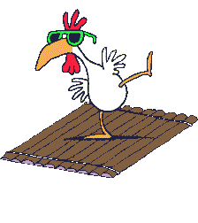

<br/>
<audio src="a.mp3" controls loop autoplay></audio>Miku has been on a raft with a chicken for <span>1</span> seconds
<script>

i = 0
function foo() {
    s= document.getElementsByTagName("span")[0]
    s.innerHTML = String(i++)
    setTimeout(foo,1000);
}
foo()
</script>
